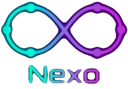
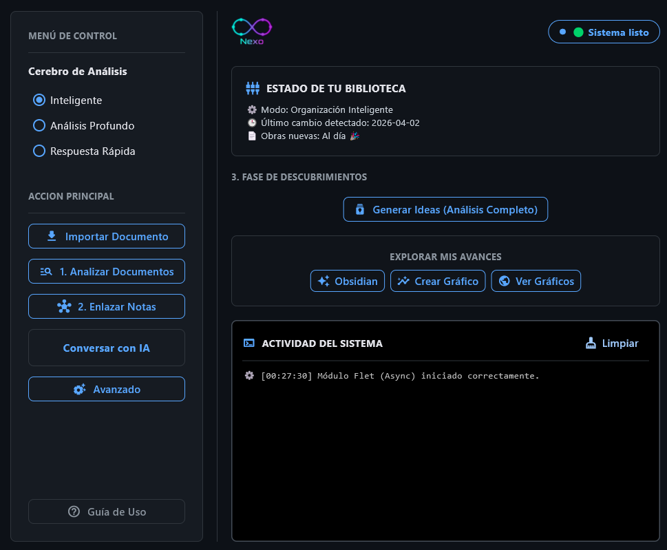
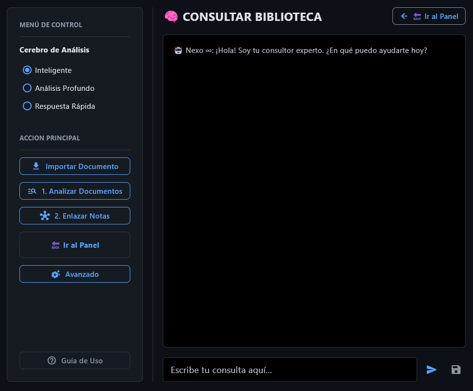
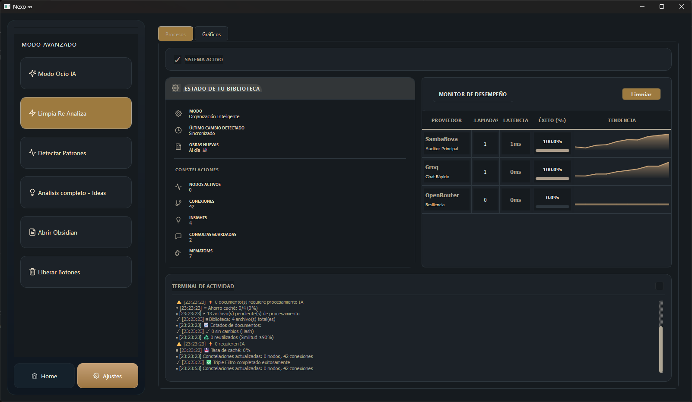
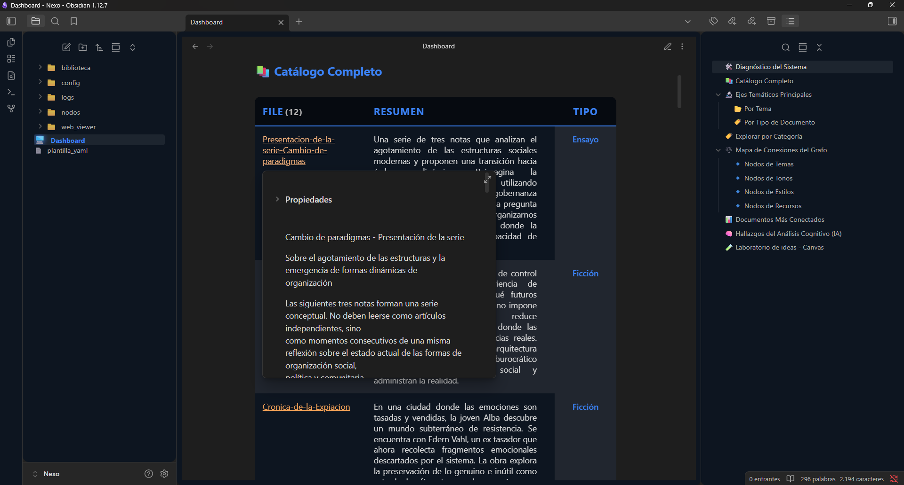
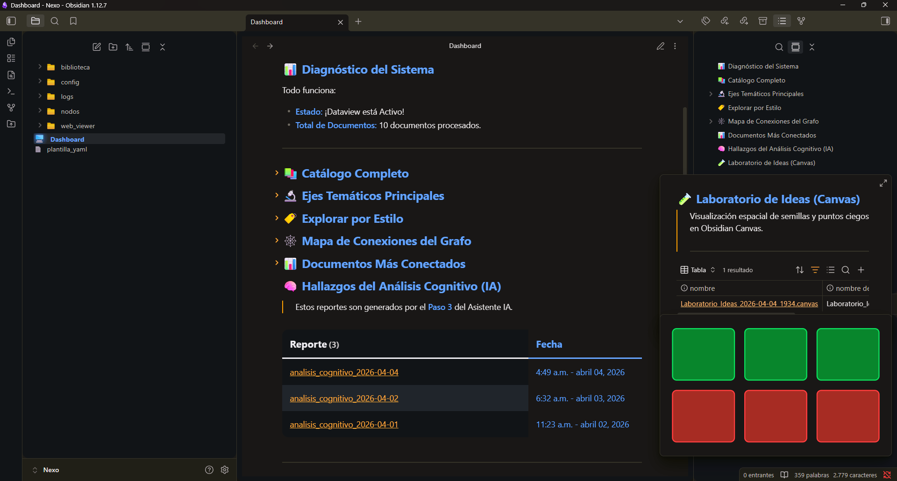
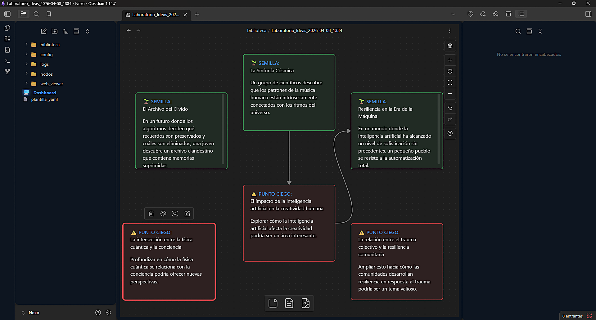
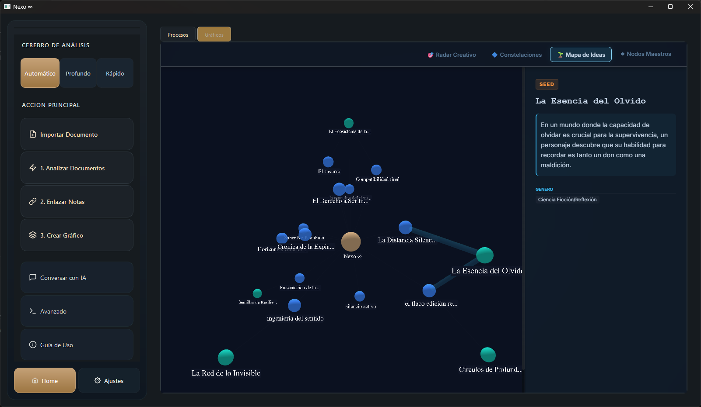

El horizonte final de tu biblioteca personal.
Un ecosistema donde el caos se convierte en
red de sabiduría.
La Filosofía del Sistema
Nexo ∞ no es una herramienta de escritura, es un amplificador cognitivo. El sistema trabaja sobre los documentos que tú creas, enriqueciéndolos con metadatos semánticos, conectándolos mediante grafos inteligentes y sugiriendo nuevas vías de investigación.

Protocolo de Instalación
Nexo ∞ guía tu configuración mediante un proceso automatizado de 5 etapas para asegurar una sincronización perfecta entre tu mente y el sistema.
Perfilado
En el Diálogo de Bienvenida, defines tu nombre y la temática de tu biblioteca. Esto permite que la IA personalice el Dashboard y los criterios de análisis desde el primer segundo.
Verificación de Motor
El sistema busca la presencia de Obsidian en tu equipo. Es un requisito esencial, ya que Nexo utiliza su arquitectura para renderizar tu grafo de conocimiento.
Asistente de Descarga
Si no tienes Obsidian: Nexo detendrá el proceso y te ofrecerá un acceso directo a la descarga oficial. La instalación se pausará hasta que el motor visual esté listo.
Despliegue del Vault
Una vez detectado Obsidian: El sistema crea automáticamente tu espacio de trabajo en
Documentos/Nexo e instala los plugins necesarios para que las gráficas y tablas
funcionen de inmediato.
Activación de IA
Finalmente, se verifica la conexión con tus llaves de Gemini , Groq y recomiendo tambien OpenRoute en el archivo de configuración. Si todo es correcto, el sistema se ilumina y queda listo para procesar tus documentos.
Activación de Energía (API Keys)
Para que Nexo ∞ pueda pensar, analizar y razonar, necesita conectarse a los motores de IA. Puedes obtener tus llaves de acceso de forma gratuita en los siguientes enlaces:
1. Google Gemini (Cerebro Analítico)
Es el motor principal para el análisis profundo de documentos y visión.
Obtener Gemini API Key →2. Groq (Velocidad Instantánea)
Permite que el chat responda a una velocidad casi humana y procese textos rápidos.
Obtener Groq API Key →3. OpenRouter (Modelos Alternativos)
Brinda acceso a una amplia gama de modelos de código abierto y respaldo técnico.
Obtener OpenRouter API Key →
Abre el archivo .env en la carpeta raíz de Nexo ∞ y reemplaza los valores
correspondientes. El archivo debería verse así:
GEMINI_API_KEY=tu_llave_aqui
GROQ_API_KEY=tu_llave_aqui
OPENROUTER_API_KEY=tu_llave_aquiCiclo de Procesamiento
Analizar Documentos
Escanea archivos de biblioteca/Documentos y genera metadatos (Frontmatter YAML)
con etiquetas, tono y temática.
Enlazar Notas
Inyecta Wikilinks y Tags que activan el grafo relacional dinámicamente, conectando conceptos entre documentos.
Generar Ideas
Ejecuta un Análisis Completo que detecta patrones ocultos y genera "Semillas" de ideas basadas en tu biblioteca.
Chat con Biblioteca (RAG)
Pregúntale a tus propios documentos. Nexo ∞ utiliza un sistema de Generación Aumentada por Recuperación para responder usando exclusivamente tu información.
Conversación de Alta Fidelidad
Al chatear, el sistema localiza los fragmentos exactos de tus notas que responden a tu pregunta, asegurando respuestas libres de invenciones (alucinaciones).

Exploración Visual (MRV 4.0)
Haz clic en 🌐 Ver Gráficos para abrir el Visor Web con sus 4 perspectivas:
🎯 Radar: Dashboard de ideas y puntos ciegos.
🔷 Constelaciones: Documentos agrupados por género con hover interactivo.
🌱 Mapa: El universo Nexo en un grafo concéntrico.
◆ Hubs: Foco en temas específicos y sus conexiones.
Centro de Comando Superior
Pulsa el botón 🛠️ Avanzado para acceder a las herramientas de mantenimiento y optimización profunda del ecosistema.
😴 Modo Ocio de la IA
Activa el Modo Ocio cuando no estés usando la app. Nexo aprovechará el tiempo para elevar
la calidad de tus documentos antiguos (optimized), buscando temas ocultos y
mejorando los wikilinks automáticamente.
🔓 Liberar y Desbloquear
Desde este panel puedes "liberar" el sistema para realizar tareas de mantenimiento masivo:
- Reiniciar Todo: Limpia el estado de análisis para procesar toda la biblioteca desde cero.
- Sincronizar Vault: Asegura que Obsidian y la App de Flet vean exactamente lo mismo.
📊 Monitor de Desempeño
Observa el "latido" de tu sistema. El monitor muestra la latencia en milisegundos de cada API, permitiéndote diagnosticar cuellos de botella o caídas de servicio.

El Ecosistema de Procesamiento
Nexo ∞ no es solo una base de datos; es un ecosistema de procesamiento. El flujo de trabajo se divide en dos grandes dimensiones: la Edición y Estructuración (en Obsidian) y la Visualización y Descubrimiento (en el Visor Nexo).
1. El Centro de Control (Obsidian)
Obsidian es tu mesa de trabajo. Aquí es donde el código de Nexo ∞ materializa la estructura física de tu pensamiento.
A. Dashboard de Estado
Al abrir tu Vault, el sistema te recibe con un panel de instrumentos que valida la integridad de tu biblioteca.

B. El Laboratorio de Ideas (Canvas)
Para combatir la "ley del mínimo esfuerzo", Nexo utiliza el Canvas de Obsidian para crear un mapa de tensión argumental.


2. El Radar de Navegación (Visor MRV 4.0)
Mientras que Obsidian es para el "mantenimiento" y la edición, el Visor Web de Nexo es para la exploración de largo alcance. Es aquí donde la IA proyecta el futuro de tu obra.
A. Mapa de Ideas y Constelaciones
El visor proyecta tu biblioteca en un espacio vectorial donde puedes ver cómo tus notas actuales alimentan proyectos futuros.

B. Auditoría y Metadata Predictiva
Al seleccionar un nodo, el sistema despliega una "hoja de ruta" para esa idea específica, sugiriendo géneros, puntajes de relevancia y sinopsis iniciales.
3. El Ciclo de Retroalimentación (Feedback Loop)
La potencia de Nexo ∞ reside en su interoperabilidad:
Ingeniería
El sistema analiza tus archivos y detecta una "falla de tensión" o una oportunidad de conexión.
Visualización
Ves esa conexión en el Visor de Gráficos como una nueva "Semilla".
Acción
Regresas a Obsidian para editar el texto, ampliar la nota o conectar los nodos manualmente.
Optimización
El sistema re-calcula y el mapa se actualiza.